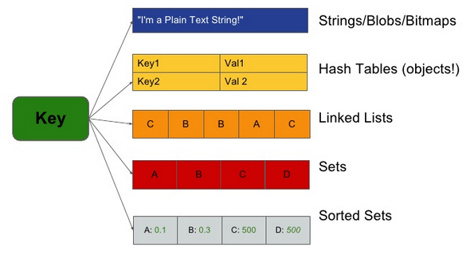

REDIS

Agenda
- Redis - opšti pregled
- Strukture podataka
- Postojanost podataka
- Transakcije
- Organizacija podataka
- Redis & PHP
Kratka istorija projekta Redis
Projekat započeo Salvatore Sanfilipo - @antirez 2009. godine
Napisan u jeziku ANSI C
Radi na većini POSIX sistema (Linux, OS X, Solaris...)
Open source - https://github.com/antirez/redis - 98 kontributora
Od 2010. godine sponzoriše ga VMWare
Projektu se priključio Pieter Noordhuis
Šta je Redis
- REmote DIctionary Server
- Napredna key value baza
- Server struktura podataka - string, set, sorted set, list i hash
- Podaci se nalaze u memoriji
- Ekstremno brz - 100K operacija u sekundi
- Nema indeksa i nema šeme
- Radi sa komandama
- Atomske operacije
- Predvidive performanse
- Radi na 6379 text based tcp protokolu
Šta je Redis
-
Jednostavna instalacija
$sudo apt-get install redis-server - Podesiva postojanost podataka
- Master-slave replication
- Particioniranje
- Lua scripting - stored procedures
- Redis-CLI i Redis Sentinel
- Dostupni klijenti za gotovo sve programske jezike
Strukture podataka
Strings, Hashes, Lists, Sets, Sorted Sets
 img src - http://www.slideshare.net/dvirsky/kicking-ass-with-redis
Strings
- Predstavlja osnovnu strukturu
- Može da sučuva podatke veličine do 512 MB
Primeri stringova:
- post_counter - 9888
- current_mode - "Maximum"
- bitcode - 0101
- average_points - 15.5
Komande nad stringovima
Osnovne komande (SET, GET, MSET, MGET, GETSET)
Integer&Float (INCR, INCRBY, DECR, DECRBY, INCRBYFLOAT)
String (APPEND, SETRANGE, GETRANGE, STRLEN)
Expiring (SETEX, PSETEX)
Locking (SETNX, PSETNX)
Bit (BITCOUNT, BITOP, SETBIT)
Hashes
- Predstavljaju niz field->value parova
- Pandam asocijativnim nizovima u PHP-u
- Zauzimaju malo prostora
- Do 2 32 -1 field->value parova
Primer hash-a:
| user:2 | |
| username | komita1981 |
| first_name | Milan |
| second_name | Popović |
| age | 32 |
Komande nad hash-evima
Osnovne komande (HSET, HGET, HMSET, HMGET, HGETALL, HKEYS, HVALS, HDEL)
Field komande (HEXISTS, HLEN)
Integer & Float (HINCRBY, HINCRBYFLOAT)
Sets
- Predstavlja neuređenu strukturu jedinstvenih elemenata
- Pandam numeričkim nizovima u PHP-u
- Do 232-1 elemenata
Primer seta:
- even_numbers {2, 4, 6, 8, 10...}
- group_members {'John', 'Mike', 'Bob', 'Alice'...}
Komande nad setovima
Osnovne komande (SADD, SREM, SMEMBERS, SCARD, SISMEMBER)
Pomoćne komande (SRANDMEMBER, SPOP, SMOVE)
Komande skupovnih operacija (SINTER, SUNION, SDIFF, SINTERSTORE, SUNIONSTORE, SDIFFSTORE)
Sorted set
- Uređena struktura jedinstvenih elemenata
- Do 232-1 elemenata
Primer sorted seta:
| score_board: | |
| Partizan | 65 |
| Rad | 50 |
| Vojvodina | 55 |
| Radnički | 45 |
Komande nad sortiranim setovima
Osnovne komande (ZADD, ZREM, ZCARD, ZSCORE, ZCOUNT, ZINCRBY)
Komande skupovnih operacija (ZINTERSTORE, ZUNIONSTORE)
Komande ranga (ZRANK, ZREVRANK)
Komande opsega (ZRANGE, ZREVRANGE, ZREMRANGEBYRANK)
Komande bodova (ZRANGEBYSCORE, ZREVRANGEBYSCORE, ZREMRANGEBYSCORE)
Lists
- Predstavlja niz stringova
- Elementi se ubacuju na početak ili kraj (glavu i rep)
- Do 232-1 elemenata
Primer liste:
last_registered_users: [memre, remem, streamer, poper...] last_logins: [memre, remem, memre, streamer, poper, remem...]
Komande nad listama
Osnocne operacije (LPUSH, RPUSH, LPOP, RPOP, LLEN)
Blok komande (BRPOP, BLPOP)
Pomoćne komande (LINDEX, LRANGE, LSET, LPUSH, RPUSH...)
Zajedničke komande
DEL, RENAME, TYPE, SORT
EXPIRE, PEXPIRE, EXPIREAT, PEXPIREAT, PERSIST, TTL, PTTL
KEYS, MONITOR, FLUSHDB
PUB/SUB
Publish/Subscribe messaging paradigm
PUBLISH, SUBSCRIBE, UNSUBSCRIBE, PSUBSCRIBE, PUNSUBSCRIBE
Postojanost podataka
- RDB persistance
- AOF persistance
- No persistance
- AOF+RDB persistance
Transakcije
- Redis transakcije != RDBMS transakcije
- Atomske operacije
- MULTI - EXEC
- WATCH - UNWATCH - DISCARD
Organizacija podataka
Relacione baze : Koje odgovore imam?
Redis : Koja pitanja imam?
Dobri nazivi ključeva
Separatori u nazivu - najčešće ":"
Ko koristi Redis?